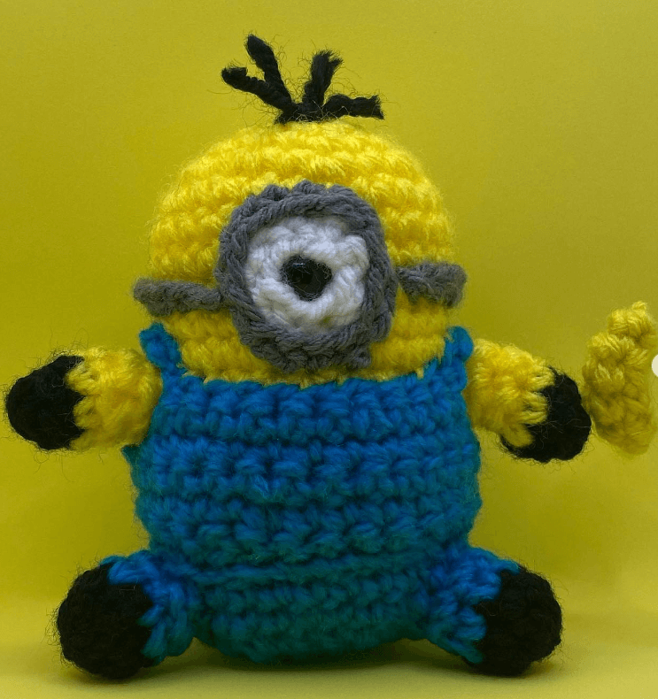

Amigurumi is Japanese for crocheted or knitted stuffed toy". The Japanese art of knitting or crocheting small, stuffed yarn creatures.
Name: Amigurumi Axolotl
Pattern:Round 1: With pink yarn, make a magic ring, ch 1, and work 6 sc into the ring. Pull tight to close. (6 sc)
Round 2: Inc in each st around. (12 sc)
Round 3: (Sc in next st, inc) repeat around. (18 sc)
Round 4-7: Sc in each st around. (18 sc for each round)
Round 8: Change to white yarn. Sc in each st around. (18 sc)
Round 9-12: Sc in each st around. (18 sc for each round)
Round 13: (Sc in next st, dec) repeat around. (12 sc)
Round 14: Dec in each st around. (6 sc)
Fasten off, leaving a tail for closing. Stuff the body. Add 3 gills on both sides, same pattern used for the arms but add another row of chains. Done!
Purchase at: Wicked Wool
Cost for commision: $12.00
Name: Benito Plush
Pattern:
Round 1: With your chosen color, make a magic ring, ch 1, and work 6 sc into the ring. Pull tight to close. (6 sc)
Round 2: Inc in each st around. (12 sc)
Round 3: (Sc in next st, inc) repeat around. (18 sc)
Round 4: (Sc in next 2 sts, inc) repeat around. (24 sc)
Round 5: (Sc in next 3 sts, inc) repeat around. (30 sc)
Round 6-7: Sc in each st around. (30 sc for each round)
Round 8: (Sc in next 3 sts, dec) repeat around. (24 sc)
Round 9: (Sc in next 2 sts, dec) repeat around. (18 sc)
Round 10: (Sc in next st, dec) repeat around. (12 sc)
Round 11: Dec in each st around. (6 sc)
Fasten off, leaving a tail for sewing. Done!
Purchase at: Wicked Wool
Cost for commision: $12.00

Name: Minion Amigurumi
Pattern: Round 1: With yellow yarn, make a magic ring, ch 1, and work 6 sc into the ring. Pull tight to close. (6 sc)
Round 2: Inc in each st around. (12 sc)
Round 3: (Sc in next st, inc) repeat around. (18 sc)
Round 4-5: Sc in each st around. (18 sc for each round)
Round 6: (Sc in next 2 sts, inc) repeat around. (24 sc)
Round 7-9: Sc in each st around. (24 sc for each round)
Round 10: (Sc in next 2 sts, dec) repeat around. (18 sc)
Round 11: Sc in each st around. (18 sc)
Round 12: (Sc in next st, dec) repeat around. (12 sc)
Round 13: Dec in each st around. (6 sc)
Fasten off, leaving a tail for closing. Stuff the body.
Round 1: With blue yarn, make a magic ring, ch 1, and work 6 sc into the ring. Pull tight to close. (6 sc)
Round 2: Inc in each st around. (12 sc)
Round 3-4: Sc in each st around. (12 sc for each round)
Fasten off, leaving a tail for attaching. Done!
Purchase at: Wicked Wool
Cost for commision: $12.00
Name: Pikachu Amigurumi
Pattern: Round 1: With yellow yarn, make a magic ring, ch 1, and work 6 sc into the ring. Pull tight to close. (6 sc)
Round 2: Inc in each st around. (12 sc)
Round 3: (Sc in next st, inc) repeat around. (18 sc)
Round 4-6: Sc in each st around. (18 sc for each round)
Round 7: (Sc in next st, dec) repeat around. (12 sc)
Round 8: Sc in each st around. (12 sc)
Round 9: Dec in each st around. (6 sc)
Fasten off, leaving a tail for closing. Stuff the body.
Ears (Make 2):
Round 1: With yellow yarn, make a magic ring, ch 1, and work 4 sc into the ring. Pull tight to close. (4 sc)
Round 2: Sc in each st around. (4 sc)
Round 3: (Sc in next st, inc) repeat around. (6 sc)
Round 4-5: Sc in each st around. (6 sc for each round)
Fasten off, leaving a tail for attaching.
Assembly:
Sew the ears onto Pikachu's head.
Attach the tail to Pikachu's back.
Add the facial features, including eyes, cheeks, and mouth. Done!
Purchase at: Wicked Wool
Cost for commision: $15.00
Name: Spiderman Car Dice
Pattern:Head:
Round 1: With red yarn, make a magic ring, ch 1, and work 6 sc into the ring. Pull tight to close. (6 sc)
Round 2: Inc in each st around. (12 sc)
Round 3: (Sc in next st, inc) repeat around. (18 sc)
Round 4-6: Sc in each st around. (18 sc for each round)
Round 7: (Sc in next st, dec) repeat around. (12 sc)
Round 8: Sc in each st around. (12 sc)
Round 9: Dec in each st around. (6 sc)
Fasten off, leaving a tail for closing. Stuff the head.
Body:
Round 1: With red yarn, ch 6, join with a slip stitch to form a ring.
Round 2-10: Sc in each st around. (6 sc for each round)
Fasten off, leaving a tail for attaching. Stuff the body.
Legs (Make 4):
Round 1: With red yarn, make a magic ring, ch 1, and work 4 sc into the ring. Pull tight to close. (4 sc)
Round 2: Sc in each st around. (4 sc)
Round 3-12: Sc in each st around. (4 sc for each round)
Fasten off, leaving a tail for attaching. Done!
Purchase at: Wicked Wool
Cost for commision: $12.00
Name: Coraline Squid Keychain
Pattern:
Body:
Round 1: With your chosen color, make a magic ring, ch 1, and work 6 sc into the ring. Pull tight to close. (6 sc)
Round 2: Inc in each st around. (12 sc)
Round 3-5: Sc in each st around. (12 sc for each round)
Round 6: (Sc in next st, dec) repeat around. (8 sc)
Fasten off, leaving a tail for closing. Stuff the body.
Tentacles (Make 8):
Round 1: With your chosen color, make a magic ring, ch 1, and work 4 sc into the ring. Pull tight to close. (4 sc)
Round 2: Sc in each st around. (4 sc)
Fasten off, leaving a tail for attaching.
Assembly:
Sew the tentacles evenly around the bottom of the body.
Attach safety eyes to the top of the body.
Embroider a small smile or facial features using black yarn.
Add any additional details or embellishments you'd like. Done!
Purchase at: Wicked Wool
Cost for commision: $12.00
Name: Amigurumi Tigger
Pattern:Body:
Round 1: With orange yarn, make a magic ring, ch 1, and work 6 sc into the ring. Pull tight to close. (6 sc)
Round 2: Inc in each st around. (12 sc)
Round 3: (Sc in next st, inc) repeat around. (18 sc)
Round 4-8: Sc in each st around. (18 sc for each round)
Round 9: (Sc in next st, dec) repeat around. (12 sc)
Round 10: Sc in each st around. (12 sc)
Round 11: Dec in each st around. (6 sc)
Fasten off, leaving a tail for closing. Stuff the body.
Head:
Round 1: With orange yarn, make a magic ring, ch 1, and work 6 sc into the ring. Pull tight to close. (6 sc)
Round 2: Inc in each st around. (12 sc)
Round 3: (Sc in next st, inc) repeat around. (18 sc)
Round 4-7: Sc in each st around. (18 sc for each round)
Round 8: (Sc in next st, dec) repeat around. (12 sc)
Fasten off, leaving a tail for closing. Stuff the head.
Ears (Make 2):
Round 1: With orange yarn, make a magic ring, ch 1, and work 4 sc into the ring. Pull tight to close. (4 sc)
Round 2: Sc in each st around. (4 sc)
Fasten off, leaving a tail for attaching.
Tail:
Row 1: With orange yarn, ch 6.
Row 2: Starting from the second ch from the hook, sc in each ch across. (5 sc)
Fasten off, leaving a tail for attaching.
Assembly:
Sew the head onto the top of the body.
Attach the ears to the sides of the head.
Sew the tail to the back of the body.
Attach safety eyes or use black yarn to embroider eyes onto Tigger's face.
Embroider a nose and mouth using black yarn.
Purchase at: Wicked Wool
Cost for commision: $12.00